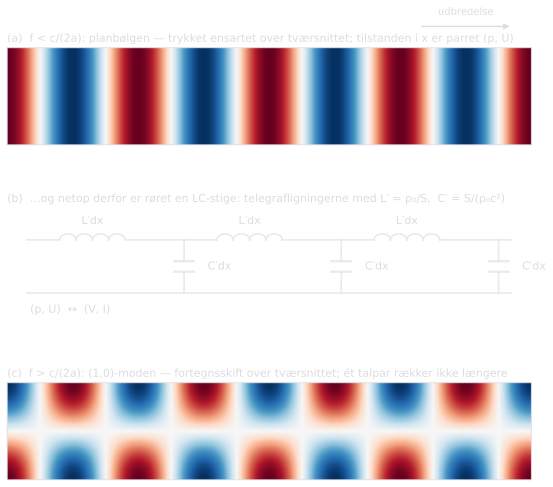
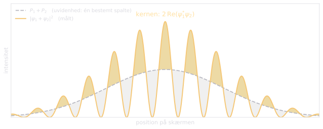

Der er to ganske forskellige måder, hvorpå et spørgsmål kan være dårligt bygget, og de kræver hver sin kur. Den første er berømt og har et navn. Den anden er mindst lige så almindelig, gør mindst lige så megen skade og er — så vidt jeg kan opdage — uden navn. Dette essay sætter dem side om side og lader derefter parret arbejde på det vanskeligste emne, der findes.
FØRSTE DEL: TO MÅDER AT STILLE ET SPØRGSMÅL SKÆVT
Den fejlmærkede kasse
En besøgende bliver vist rundt i Oxford: kollegierne, bibliotekerne og laboratorierne, sportsbanerne, institutterne. Til sidst spørger hun: »Men hvor er selve universitetet?« Hun har opfattet »universitetet« som endnu en institution af samme slags som kollegierne — en yderligere bygning et sted midt iblandt dem — mens det i virkeligheden blot er den måde, alt det, hun allerede har set, er organiseret på. Hendes spørgsmål er ikke svært at besvare. Det er misdannet.
Gilbert Ryle fortalte denne historie i The Concept of Mind (1949) for at indfange en tanke, hvis aner går tilbage gennem Russells typeteori til Aristoteles’ Kategorier. En kategorifejl opstår, når noget, der tilhører én logisk type, behandles, som om det tilhørte en anden. Resultatet er sætninger, der er grammatisk uangribelige, men snarere meningsløse end falske: »tallet syv er grønt«, »onsdag ligger i sengen«, »relativitetsteorien er blå«. Hver især sætter de et prædikat på et subjekt af den forkerte type, og prædikatet finder intet at gribe fat i.
Ryles eget vildt var den cartesianske dualisme, som han døbte »spøgelset i maskinen«: Descartes havde ganske vist korrekt indset, at sindet ikke er kroppen, men sluttede deraf, at det måtte være en anden ting af samme almene type — en substans, en mekanisme — blot immateriel. Diagnosen viste sig frugtbar langt ud over det. Humes kløft mellem er og bør behandler kendsgerning og værdi som adskilte kategorier, som intet argument stiltiende kan slå bro over. Det, Bennett og Hacker kalder den mereologiske fejlslutning i neurovidenskaben, tilskriver hjernen prædikater, der kun giver mening om hele det levende menneske: en hjerne beslutter, ser eller tror ikke; det gør et menneske, ved hjælp af sin hjerne.
Fysikken leverer usædvanligt klare eksemplarer. Hvad er et enkelt molekyles temperatur? Temperatur er en statistisk egenskab ved et ensemble, ikke ved én partikel; spørgsmålet forveksler system og bestanddel. Er et enligt vandmolekyle vådt? Samme fejl. Hvad ligger nord for Nordpolen? Grammatikken er fejlfri, men »nord for« holder simpelthen op med at gælde dér — hvilket er selve formen på Hawkings svar på »hvad skete der før Big Bang?« Og Augustin, adspurgt om, hvad Gud lavede, før han skabte verden, svarede, at tiden selv er en del af skabelsen, så der er intet »før« for gerningen at udfylde: spørgsmålet smugler den tidslige beholder ind i netop det, der skulle begrunde den.
Det rette svar på en kategorifejl er ikke at slide sig frem mod en løsning, men at bemærke, at kassen var mærket forkert — at opløse problemet snarere end at løse det.
Ligedannet er ikke kongruent
Så til den anden fejl, som er den mest lumske, fordi intet umiddelbart er på gale plads. Geometrien, som ethvert skolebarn møder den, leverer både navnet og skellet. To trekanter er ligedannede, når alle vinkler stemmer og alle sideforhold bevares. Hele strukturen går igen: enhver sætning om vinkler og forhold, der gælder den ene, gælder også den anden. Og alligevel er de ikke den samme trekant. Kongruente er de først, når de derudover er lige store, så den ene lagt oven på den anden dækker den fuldstændigt.
Ligedannethed bevarer strukturen; kongruens hævder sammenfald. En kongruensfejl er da at tage det første for det andet: at behandle en ægte strukturlighed — en analogi — som var den en identitet. Kategorifejlen siger, at kassen er mærket forkert. Kongruensfejlen siger, at kassen er rigtig, men at man har antaget, at indholdet stemmer led for led.

Fejlen har et spejlbillede, som er mindst lige så vigtigt: at undervurdere en lighed, at afvise en faktisk identitet som »blot en analogi«. Videnskabshistorien er blevet forsinket af begge grøfter.
Jeg skal være ærlig om, hvad der her er nyt, og hvad der ikke er. Navnet synes ubrugt, men tanken er gammel. Den klassiske uformelle fejlslutning faulty analogy er netop antagelsen om, at fordi to ting ligner hinanden i nogle henseender, må de ligne hinanden i andre; de ældre lærebøger formulerer det næsten som ovenfor — analogien er god til sammenligning, men bliver ulovlig, når den bruges til at antyde identitet af natur. Endnu nærmere ligger Mary Hesse, hvis Models and Analogies in Science (1963) deler analogien i positiv (det, model og genstand deler), negativ (hvor de ikke stemmer) og neutral (den uafprøvede rest, hvorfra forudsigelseskraften kommer). Hendes negative analogi er næsten nøjagtig det, jeg nedenfor kalder kernen — og hendes neutrale analogi markerer en kategori, vi mangler: det, der endnu ikke er sorteret til nogen af siderne.
Hvad det geometriske navn tilføjer, er ikke en opdagelse, men en disciplin: det kan læres på tredive sekunder, det placerer fejlen på én skala sammen med kategorifejlen, og — som vi skal se — det giver plads til det tilfælde, fejlslutningslitteraturen aldrig behandler, hvor afbildningen slet ikke er mangelfuld, men eksakt inden for et angivet domæne.
III. Klasseværelsets analogier og deres kerner
Vi lever af analogier i undervisningen, og det skal vi blive ved med: de er ikke et nødvendigt onde, men selve den måde, forståelse flyttes fra ét sind til et andet. Kunsten er at give analogien og dens grænse i samme åndedrag.
Tag vandmodellen for det elektriske kredsløb: pumpen som spændingskilde, trykforskellen som potentialforskel, strømningen som strøm, indsnævringen som modstand. Den bærer langt — serie og parallel, Ohms lov som proportionalitet mellem drivende forskel og strøm, endda kondensatoren som en elastisk membran i røret, der spærrer for jævnstrøm, men lader vekselstrøm passere. Men den har en kerne af ting, den taber. Elektronerne forbruges ikke undervejs, som eleverne ellers let slutter. Energien transporteres ikke inde i ledningen, som vand føres inde i et rør, men i feltet omkring den. Og klipper man ledningen over, fosser der ingenting ud — strømmen standser overalt på én gang. Intet af dette gør modellen dårlig. Det gør den til en afbildning med et gyldighedsområde.
Eller solsystem-atomet. Ligheden er ægte og var frugtbar: samme centralkraft med samme 1/r²-form, og det var netop den lighed, der lod Rutherford beregne sin spredning. Men et kongruent solsystem ville stråle — en accelereret ladning udsender energi — og elektronen ville spiralere ind i kernen på omkring 10⁻¹¹ s. Kvantiseringen sætter ind nøjagtig dér, hvor kongruensen ender. Lærdommen til eleverne er ikke »modellen er forkert«, men »afbildningen har et domæne« — og en god vane er at bede dem nævne én ting, modellen rammer nøjagtigt, og én ting, den ikke må bruges til.
Det eksakte tilfælde: lyd i et lige rør
At en analogi kan være eksakt inden for sit domæne, viser mit eget gamle felt, lydudbredelse i rør, med usædvanlig klarhed.
Betragt et stift rør, og hold frekvensen under den første tværsvingnings grænsefrekvens — for et rektangulært tværsnit med bredden a ligger den ved f = c/(2a). Under denne grænse kan ingen tværbølge udbrede sig; de er alle evanescente og dør bort over en strækning af rørets egen størrelsesorden. Trykket er derfor ensartet over hvert tværsnit, og hele den akustiske tilstand i positionen x er givet ved blot to tal: trykket p og volumenhastigheden U. Det er nøjagtig samme tilstandsrum som transmissionslinjens, (V, I) — og det er her, kongruensen begynder. Ikke i en løs lighed, men i at tilstandene svarer til hinanden én til én.
Fysikken leverer så de to love, og det er værd at skrive ræsonnementet ud frem for at citere resultatet. Betragt en tynd skive gas med tværsnitsareal S og tykkelse dx. Dens masse er ρ₀S dx, og den resulterende kraft på den er trykforskellen over dens flader, −(∂p/∂x)S dx. Dens acceleration er partikelhastighedens, og da U = Sv, lyder Newtons anden lov
hvor ρ₀/S spiller nøjagtig rollen som serieinduktans pr. længdeenhed, L′ — gassens inerti. Den anden lov er massebevarelse med sammentrykkelighed: ethvert overskud af tilstrømning over udstrømning, −(∂U/∂x) dx, må lagres ved at trykke gassen i skiven sammen, og for en adiabatisk kompression følger trykstigningen dp = ρ₀c² × (relativ volumenændring). Altså
med S/(ρ₀c²) som parallelkapacitans pr. længdeenhed, C′ — gassens fjederkraft. Det er telegrafligningerne, led for led.
Og kongruensen betaler selv sin regning. Udbredelsesfarten bliver 1/√(L′C′) = c, og den karakteristiske impedans Z₀ = √(L′/C′) = ρ₀c/S — begge de rigtige akustiske størrelser, leveret af den elektriske formalisme. Under grænsefrekvensen ligner røret ikke en transmissionslinje; det er én, nøjagtigt.
Over grænsefrekvensen bliver afbildningen ikke gradvist dårligere — tilstandsrummet vokser fra den. Matematikken bag grænsen er dispersionsrelationen for (n,0)-moden,
som gør det aksiale bølgetal k imaginært for f < nc/(2a). Moden henfalder da som e^(−|k|x) over en strækning af rørets egen størrelsesorden — hele hemmeligheden bag, at planbølgebilledet er eksakt dernede. Over den frekvens er k reel, højere modes udbreder sig, trykket får struktur hen over tværsnittet, og intet enkelt talpar beskriver feltet; man må have én linje pr. mode.
Og selv under grænsen røber modellen sin egen kerne på den smukkeste måde. Ved en samling eller en munding exciteres de evanescente højere modes alligevel lokalt, og planbølgemodellen bogfører dem som en klumpet mundingskorrektion. Det er analogiens modne form: ikke »dette ligner hint«, men »dette er hint, inden for disse grænser — og her er det led, der dækker resten«. Enhver, der bygger blæseinstrumenter, bruger den bogføring dagligt.

Historiens to grøfter
Overvurderingens klassiker er kalorikken. Varme strømmer virkelig som en væske — Fouriers varmeledningslov står urørt den dag i dag, netop fordi den kun byggede på strømningsligheden og aldrig på stofpåstanden. Men kalorikken tog ligheden det ene skridt videre: varme som et bevaret stof. Rumfords kanonboringer i 1798 punkterede påstanden — der kunne frembringes varme uden grænse, så længe hestene gik rundt, og et bevaret stof kan ikke skabes i det uendelige. Ligedannetheden var ægte; kongruensen var falsk.
Mesteren i den kontrollerede analogi var Maxwell. Han gjorde den til erklæret metode — den fysiske analogi, den delvise lighed mellem to videnskabers love, der lader den ene kaste lys over den anden — og red væskebilledet af feltlinjerne hele vejen frem til ligningerne, hvorefter han steg af, før ligheden blev gjort til identitet.
Men den modsatte grøft er lige så virkelig og har kostet videnskaben mindst lige så meget: at afvise en identitet som blot en analogi. Vitalismen insisterede på, at organisk kemi kun lignede uorganisk, indtil Wöhler i 1828 fremstillede urinstof af ammoniumcyanat. Joule viste, at »varme er ligesom bevægelse« skulle læses uden »ligesom«. Og Shannons entropi, −Σ p log p, bar samme ansigt som Boltzmanns; Jaynes argumenterede for, at det var samme størrelse, og Landauer gav påstanden fysiske tænder — at slette én bit koster mindst kT ln 2 i varme — hvormed Bennett endelig kunne mane Maxwells dæmon i jorden, for dæmonens hukommelse skal slettes, og sletningen betaler entropiregningen. Broen fra »information« til »termodynamik« var ikke en metafor. Den var kongruent.
Matematikkens målestok
Matematikken ejer hele skalaen og har målt den op. En strukturbevarende afbildning, der intet taber, hedder en isomorfi; én, der taber noget, en homomorfi — og hvad den taber, måles præcist af dens kerne. I slagordsform: enhver analogi er en homomorfi, og kongruensfejlen er at glemme, at den har en kerne. Selv ordet er hjemmehørende dér — eleverne møder det ikke kun i trekanterne, men i talteorien som kongruens modulo n: en ækvivalens, der er forenelig med strukturen. Begrebet ankommer med papirerne i orden.
Slægtskabet
Det er værd at standse op og se de to fejl i sammenhæng, for de er ikke blot naboer, men yderpunkter på én og samme skala — skalaen for, hvor meget struktur en afbildning bevarer. I det ene yderpunkt bevares intet: prædikatet finder slet ikke fat. Det er kategorifejlens hjemland; kassen er mærket forkert, og der findes ingen afbildning at diskutere. I det andet bevares alt inden for et angivet domæne: røret under grænsefrekvensen, hvor tilstandene svarer til hinanden én til én. Imellem dem ligger analogiernes brede land, de ægte homomorfier med ægte kerner. Kategorifejlen er i den forstand kongruensfejlens grænsetilfælde: den afbildning, hvis kerne er det hele.
Deraf følger, at de to kræver hver sin behandling, og at kunsten ligger i diagnosen. En kategorifejl skal opløses: spørgsmålet trækkes tilbage, og der er ikke mere at gøre. En kongruensfejl skal opmåles: afbildningen er ægte, og opgaven er at finde domænegrænsen og kernen. Den hurtige prøve er denne: findes der overhovedet en strukturlighed at pege på? Hvis nej, er man i kategorifejlens land, og terapien er at opgive spørgsmålet. Hvis ja, er spørgsmålet ikke om, men hvor langt — og så skal landmålingen i gang.
De to kan oven i købet avle hinanden. En analogi, der presses ud over sit domæne, producerer kategorifejl på samlebånd: tager man solsystem-atomet kongruent, ligger spørgsmål som »hvilken årstid er det på elektronen?« lige for — grammatisk uangribelige, fysisk meningsløse. Mange af første dels skævt stillede spørgsmål er i virkeligheden børn af en overdreven kongruens. Omvendt kan en for hastig kategoridiagnose skjule en ægte identitet: at afvise Shannons entropi som noget kategorialt andet end Boltzmanns — information hører jo ikke hjemme i fysikken — var at stemple en kongruens som kategorifejl, indtil Landauer viste, at information er fysik.
ANDEN DEL: FYSIKKEN
Schrödingers kat
Dobbeltblikket betaler sig på den mest berømte gåde af alle. Man fristes til at afvise Schrödingers kat med kategorifejlens gestus: at forlange et klassisk enten-eller af en superposition er at stille den forkerte slags spørgsmål til den slags tilstand. Der er noget om det. Men den mest forføreriske mislæsning er i grunden en kongruensfejl: at tage bølgefunktionen for »bare« en sandsynlighedsfordeling over bestemte tilstande — katten er én af delene, vi ved blot ikke hvilken. Ligheden er ægte nok: ψ ligner en fordeling, og dens kvadrat leverer sandsynligheder.
Men afbildningen har en kerne, og kernen er interferensleddene. Regnestykket er ét skridt langt:
og det sidste led — fysisk virkelige krydsled, som ingen uvidenhedsfordeling ejer, og som eksperimenter kan fremkalde — er nøjagtig det, uvidenhedslæsningen taber.

PBR-sætningen (Pusey–Barrett–Rudolph, 2012) kan læses som domæneerklæringen for den afbildning: idet man kun indrømmer, at uafhængigt forberedte systemer har uafhængige fysiske tilstande, kan kvantetilstanden ikke være ren viden om en underliggende virkelighed, som forskellige tilstande kunne dele. Måleproblemet består — hvordan, eller om, bestemte udfald overhovedet opstår, er et ægte og uløst spørgsmål, og ingen net sondring opløser det. Men med begge fejl på plads kan man i det mindste sige præcist, hvorfor de nemme udveje ikke duer: den ene stiller det forkerte spørgsmål, den anden tager en lighed for en identitet.
Én elektron ad gangen
Send elektronerne af sted så sjældent, man vil: én i sekundet, om man insisterer. Hver ankommer som ét helt punkt på skærmen, og mønsteret findes ingen steder i de enkelte nedslag — kun i statistikken, hvor striberne langsomt træder frem, prik for prik. I Tonomuras klassiske udgave var den gennemsnitlige afstand mellem to elektroner undervejs omkring hundrede kilometer, i et apparat på godt en meter; ingen elektron har nogensinde »mødt« en anden. Stribeafstanden er Δx = λL/d, med λ de Broglie-bølgelængden, d spalteafstanden og L afstanden til skærmen.

Skil nu to spørgsmål ad, som det samme apparat besvarer vidt forskelligt. Mod hypotesen om klassisk uvidenhed — at hver elektron i virkeligheden går gennem én bestemt spalte — er mønsteret en knivskarp, informativ test: uvidenhedsfordelingen P₁+P₂ har ingen striber, og den falder. Men mod spørgsmålet »hvilken fortolkning af kvantemekanikken er den rigtige?« er nøjagtig samme mønster uinformativt: København, Bohm, GRW og Everett forudsiger det alle, stribe for stribe. At tage striberne som »bevis« for multiverset er derfor at trykke på den samme knap igen og igen; et eksperiment kan ikke skelne mellem hypoteser, der alle forudsiger samme udfald.
Psykologien har et navn for den underliggende fejl, og det fortjener en plads i al undervisning i eksperimentel metode: congruence bias, påvist af Peter Wason og navngivet af Jonathan Baron og hans kolleger. Fejlen ligger i selve valget af test — at man igen og igen afprøver sin foretrukne hypotese direkte i stedet for at vælge det eksperiment, der kunne skille den fra rivalerne. Spørg, før eksperimentet køres, hvad hver rival forudsiger; forudsiger de det samme, er testen spildt, uanset hvordan den falder ud.
TREDJE DEL: DET, VI SIGER OM GUD
Gud er ikke et værende
Her udfører de to fejl deres tungeste arbejde, og den første er den ældste anke.
Den klassiske teismes centrale påstand — hos Thomas Aquinas, og i vor egen tid hos forfattere som Herbert McCabe, Brian Davies og David Bentley Hart — er, at Gud ikke er et værende: ikke én post i fortegnelsen over eksisterende ting, hvor stor og mægtig den end måtte være. Gud er ikke det største objekt i eller bag universet, men ipsum esse subsistens, selve værens rene akt, grunden til, at der overhovedet er noget snarere end intet. Gud er ikke en ting i verden; Gud er grunden til, at der er en verden.
Er det rigtigt, hviler en stor del af argumentationen på begge sider på en fælles kategorifejl. Den troende, der forestiller sig Gud som en usynlig mand over skyerne, og ateisten, der triumferende gendriver dette billede, er hyppigt uenige om det samme objekt — en meget stor, meget mægtig ting placeret inde i virkeligheden — som den klassiske teologi aldrig foreslog. »Hvad forårsagede Gud?« bider kun, hvis Gud selv er en skabt-agtig ting inde i årsagernes kæde, hvilket læren netop benægter. Russells berømte tepotte sammenligner Gud med en genstand i verden, mens det, der menes, er dét, der bærer, at der er en verden at have genstande i.
Den samme optik rydder op i den stående strid mellem videnskab og tro. At behandle en naturvidenskabelig og en teologisk forklaring som rivaliserende svar på det samme spørgsmål er som regel en kategorifejl. Varmeoverførslens fysik og »jeg havde lyst til en kop te« forklarer begge, hvorfor kedlen koger, men de hører til forskellige forklaringsordener, ikke til én og samme konkurrence. Da Laplace efter sigende sagde til Napoleon, at han ikke havde brug for den hypotese, havde han på den klassiske forståelse fuldkommen ret: Gud var aldrig et led i himmelmekanikkens ligninger. At sige, at fysikken har gjort Gud overflødig, er som at sige, at grammatikken har gjort Shakespeare overflødig.
Og fejlen skærer begge veje. »Hullernes Gud« — indsat som endnu en virkende årsag for at lukke et hul, fysikken endnu ikke har fyldt — begår nøjagtig samme forveksling omvendt. Georges Lemaître, præsten og fysikeren, der først foreslog det, der blev til Big Bang, så dette præcist og advarede mod at gøre sin kosmologi til et bevis på skabelsen: universets fysiske begyndelse og dets metafysiske afhængighed af Gud er ganske enkelt forskellige spørgsmål.
Analogien: den ældste domæneerklæring
Den anden fejl er mere raffineret, og her har teologien trænet længst og mest systematisk.
Den klassiske lære insisterer på, at vort sprog om Gud er analogt, ikke univokt. At sige »Gud er god« er at hævde en virkelig lighed — men ikke, at ordet betyder om Gud nøjagtig det samme som om et menneske, blot i større format; det ville sætte Gud og skabning i samme fælles slægt. Det Fjerde Laterankoncil skrev i 1215 grænsen ind i selve læren: hvor stor en lighed der end kan udpeges mellem Skaberen og skabningen, må en endnu større ulighed bemærkes. Det er en formel erklæring om en analogis domæne, syv århundreder før Ryle, og jeg kender ingen ældre.
Duns Scotus trak i den modsatte retning og forsvarede entydigheden, men af en grund, enhver logiker må respektere: uden en tynd fælles kerne — selve begrebet »værende« — kommer ingen slutning om Gud overhovedet i gang. Striden mellem ham og Thomas er, oversat til dette essays sprog, en strid om, hvor kongruensen ender; at begge anså netop dét spørgsmål for afgørende, er selve pointen.
Med den optik bliver flere nutidige debatter klarere. Læses »Guds hånd« og »Gud fortrød« kongruent — som var Gud et væsen med lemmer og luner — er de rene fejl, og religionskritikken har let spil. Læst som billede er de bærende. Bemærkelsesværdigt nok begår den bogstavtro og den polemiske ateist ofte samme fejl med modsat fortegn: begge læser kongruent, den ene for at forsvare teksten, den anden for at fælde den. Og presses billederne forbi deres domæne, avler de kategorifejl: »hvad lavede Gud, før han skabte verden?« er barn af en kongruent læsning af skabelsen som en handling i tiden.
Krucifikset og almagtens gåder
Nu til det punkt, hvor hele dette apparat gør sig fortjent, og det er ikke et abstrakt et.
For dem, der havner i filosofiske vanskeligheder om Guds almagt, er det bedste råd at standse op og se på et krucifiks.
De velkendte gåder — kunne Gud lave en sten, han ikke kan løfte? lader almagt sig forene med alvidenhed, eller med godhed, i en verden som denne? — forudsætter alle stiltiende, at guddommelig magt er skabt magt forstørret: tvingende kraft, magt udøvet over noget, skaleret op uden grænse. Læst sådan er krucifikset almagtens gendrivelse: her er Gud på sit mest afmægtige, henrettet af en kejserlig administration under anklage for oprør.
Læst som traditionen læser det, gendriver krucifikset ikke ordet, men afslører, hvad det betød. En magt, der kan udtømme sig selv uden at ophøre med at være magt, er slet ikke magt af vores slags; den er ikke vores slags ganget op, men en anden slags, hvoraf vores er det svage billede. Paulus nåede frem til det før filosofferne og sagde det skarpere end nogen af dem: Guds svaghed er stærkere end mennesker (1 Kor 1,25) — og da han havde set det, besluttede han ikke at vide af andet blandt korintherne end Jesus Kristus, og det som korsfæstet (1 Kor 2,2).
Dette er nøjagtig en korrektion af en kongruensfejl, og det er værd at bemærke, hvorfor det er et bedre svar end en abstrakt henvisning til analogien. Henvisningen til analogien fortæller modstanderen, at »mægtig« ikke bruges univokt. Krucifikset viser det. Og det, det viser, er den hymne, Paulus citerer til filipperne, som er dette argument i poesi: han, som havde Guds skikkelse, regnede det ikke for et rov at være lige med Gud, men gav afkald på det og tog en tjeners skikkelse på — og derfor har Gud højt ophøjet ham (Fil 2,5-11). Selvudtømmelsen er ikke en ophævelse af den guddommelige magt; den er dens åbenbaring.
Åbenbaringen: JEG ER
Fornuften kan føre os langt, og det er ingen ringe strækning. Med fornuften alene kan man komme til erkendelse af, at Gud er: at der bag alt værende er en grund, væren selv. Men mere kræves. For at kende ikke blot at Gud er, men hvem han er — for at der kan være tale om et møde og ikke blot en slutning — må Gud selv tale. Kristendommens påstand er, at han har gjort det.
Det navn, der gives, da Moses spørger, er forbløffende, for det er netop dét, filosofferne famlede efter: Jeg er den, jeg er — sig til israelitterne: JEG ER har sendt mig til jer (2 Mos 3,14). Ikke et værende blandt værender, ikke en ting med et navn, som andre ting har navne, men væren selv. Det, Thomas Aquinas kaldte ipsum esse subsistens, står allerede her, sagt af Gud om ham selv. Den metafysiske indsigt og det åbenbarede navn er ét og det samme.
Og så det afgørende. Gud åbenbarede sig ikke i en bog, ikke i et politisk eller filosofisk manifest, men direkte og personligt. Han trådte ind i sit eget skaberværk — ind i tid og rum, ind i menneskehedens historie — som en af os, i mennesket Jesus. Da Jesus tog det samme guddommelige navn på sine egne læber, forstod hans tilhørere ham udmærket: før Abraham blev født, er jeg (Joh 8,58). Det var ingen from talemåde. Det var kravet om at være den, der talte til Moses fra den brændende busk, og de tog sten op.
Det indre liv og billedets kerne
Åbenbaringen viser mere end, at Gud er; den viser noget af Guds indre liv. Traditionen har længe udtrykt dette gennem det, der kaldes den psykologiske analogi: Augustin udviklede den gennem de femten bøger i De Trinitate, og Aquinas gav den dens tekniske form — udgang ved intellektets vej, som er Ordet, Sønnen; og udgang ved viljens eller kærlighedens vej, som er Ånden. Guds selverkendelse, og kærligheden mellem den erkendende og det erkendte.
Det er et storslået billede, og det er her, dette essays disciplin må rettes mod min egen tradition frem for mod dens kritikere. Augustin brugte femten bøger på at bygge disse billeder og fastholdt derefter, at de forblev billeder. Læst kongruent — som om Sønnen virkelig var en tanke og Ånden virkelig en følelse inde i ét guddommeligt sind — leverer analogien modalisme: tre aspekter af én person i stedet for tre personer. Det er ingen lille forglemmelse; det er et af de store tidlige kætterier, og det ankommer netop ved at tage en ægte lighed for et nøjagtigt sammenfald. Imago, ikke congruentia. Den psykologiske analogis kerne er præcis det, den blev formet for at beskytte.
Filioque: et skisma i kernen
Hvilket fører os til, hvad der måske er den reneste kongruensfejl i lærens historie — og et sted, hvor Kirkens egne dokumenter nu siger det med næsten disse ord.
Den nikænokonstantinopolitanske trosbekendelse af 381 bekender Ånden som udgående fra Faderen. Det latinske Vesten kom til at sige og fra Sønnen — Filioque — og udtrykket står blandt årsagerne til den fremmedgørelse mellem Øst og Vest, der har varet et årtusind.
Det er fristende for en vestlig kristen at sige, at den østlige tradition i virkeligheden støtter Filioque. Den påstand er for stærk og ville blive udfordret med det samme. Den klassiske østlige position — Photios, og i vor tid Lossky — er, at Ånden udgår fra Faderen alene, netop for at bevare Faderens monarki som eneste kilde; og dertil kommer en selvstændig og ganske rimelig indvending mod ensidigt at ændre en økumenisk trosbekendelse.
Det, der kan forsvares, er mere interessant end det, der plejer at blive hævdet. Det græske verbum bag trosbekendelsen er ekporeuesthai, og substantivet ekporeusis — som i kappadokisk brug netop betegner oprindelsesforholdet til Faderen alene, som Treenighedens princip uden princip. Det latinske processio er et bredere ord: enhver udgang, meddelelsen af den væsensfælles guddommelighed. Fordi Vulgata allerede havde gengivet Joh 15,26 — para tou Patros ekporeuetai — som qui a Patre procedit, blev de to ord lagt oven på hinanden som ækvivalenter. I det syvende århundrede forklarede Maximus Bekenderen, skrivende fra Rom, sin østlige brevpartner, at latinerne ikke gjorde Sønnen til Åndens årsag: Faderen alene er aitia, den eneste Årsag, og Filioque angår Åndens proienai i Faderens og Sønnens væsensfælles fællesskab, ikke dens ekporeusis (Brev til Marinus, PG 91, 136 A-B).
I 1995 udsendte Det Pavelige Råd for Fremme af Kristnes Enhed en klarlægning, De græske og latinske traditioner vedrørende Helligåndens udgang, som formulerer sagen i et sprog, enhver landmåler af analogier straks vil genkende: gennem den oversættelse, hedder det, blev der ufrivilligt skabt en falsk ækvivalens mellem den østlige teologis ekporeusis og den latinske teologis processio.
En falsk ækvivalens, ufrivilligt skabt. Det er en kongruensfejl beskrevet med Kirkens egne ord: to udtryk med et virkeligt betydningsoverlap, lagt oven på hinanden, som var de det samme udtryk, med forskellen — kernen — usynlig for begge parter. Og i den kerne sad et skisma. Man behøver ikke mene, at hele striden lader sig reducere til en fejloversættelse, for at se, at meget af den gjorde, og at ingen af siderne kunne se kernen, fordi hver læste sit eget ord ind i den andens bekendelse.
Det fremlægger jeg som det stærkeste tilgængelige argument for dette essays tese. Hvis en domæneforskel mellem to ord kan dele kristenheden i tusind år, er disciplinen at spørge, hvor langt en lighed rækker, ikke pedanteri. Det er fredsarbejde.
Et eksempel: Sir Anthony Kenny
En nylig nekrolog leverer et eksempel på, hvor let hele emnet fladtrykkes. Sir Anthony Kenny, der døde den 3. august 2026, var blandt sin generations fineste filosoffer: en katolsk præst, der forlod præstegerningen i 1963, og derefter forfatter til The Five Ways (1969) og The God of the Philosophers (1979), hvori han argumenterede for, at Aquinas’ beviser ikke holder, og at begrebet om en almægtig, alvidende og god Gud er usammenhængende. Nekrologens ramme var et glimrende, men tvivlende sind, ført bort fra Kirken og ind i den akademiske verden.
De gengivne kendsgerninger fortæller en mere sammensat historie. Kenny forlod aldrig Aquinas: sammen med Peter Geach var han med til at grundlægge den analytiske thomisme, bevægelsen, der fremstiller Aquinas i moderne analytisk filosofis sprog; han regnede Aquinas blandt den vestlige verdens tolv største tænkere; han blev ved med at gå til messe; og i 2006 modtog han Aquinas-medaljen fra The American Catholic Philosophical Association. Han var ikke ateist og gjorde sig umage med at sige hvorfor: eftersom ordet »Gud« kan defineres på mange måder, er ateistens påstand om, at ingen af dem kan opfyldes, en langt stærkere påstand end noget, teisten hævder. Det er et menneske, der nægter at lade som om et spørgsmål var lukket.
To ting bør siges om den mere nette version. Den første er et rent logisk punkt: at et argument fejler, gendriver ikke dets konklusion. Aquinas byggede aldrig troen på de fem veje, og vejene ender ikke med at føje en post til fortegnelsen over eksisterende ting; de ender med at pege.
Det andet er vores anden fejl. Den påståede usammenhæng mellem almagt, alvidenhed og godhed følger kun på en univok læsning — en, hvor »ved«, »kan« og »god« betyder om Gud nøjagtig det samme som om os, blot forstørret. Kenny vidste dette udmærket og bestred analogilæren med stor skarpsindighed; han skal ikke beskyldes for en begynderfejl. Men referatet har ikke ret til at gengive dommen, som var spørgsmålet aldrig rejst. Og krucifikset besvarer, som vi har set, almagtsleddet på en måde, intet referat kan: ikke ved argument, men ved at vise, hvad ordet betød.
At vide, hvilken af de to det er
Der løber en enkelt morale gennem alt dette, og den er en smule selvimplicerende. Vore mest tilfredsstillende intellektuelle træk er afvisninger — »det er bare en kategorifejl«, »det er kun information«, »det er blot en analogi« — og det er netop deres tilfredsstillende karakter, der gør dem farlige. Hver især er de et ægte redskab. Kategoridiagnosen rydder virkelig spøgelset i maskinen af vejen, hullernes Gud, det enkelte molekyles temperatur. Opmålingen af en kongruens gør sig virkelig fortjent i røret, i klasseværelset, ved dobbeltspalten og — som Filioque viser — i lærens historie. Men begge gestus, ført ét skridt for langt, vifter problemer væk, der er svære snarere end forvirrede. Måleproblemet er det stående eksempel: det mest fristende af alt at afvise som løs tale, og netop det, man mindst kan.
Altså: to spørgsmål, én disciplin. Griber prædikatet overhovedet — er kassen mærket rigtigt? Og hvor langt griber det — hvor ender kongruensen? Ingeniørens formulering er den bedste, jeg kender: over hvilket område gælder afbildningen, og hvad begrænser den?
Hvad et rørs grænsefrekvens, Maxwells metode og et middelalderligt koncil har til fælles, er, at hver især er en erklæring om, hvor en lighed ender. Det er måske den mest undervurderede slags udsagn, der findes — og i det ene tilfælde, hvor ligheden ikke ender, hvor sammenfaldet er nøjagtigt og kernen tom, siger vi slet ikke analogi. Vi siger: JEG ER.